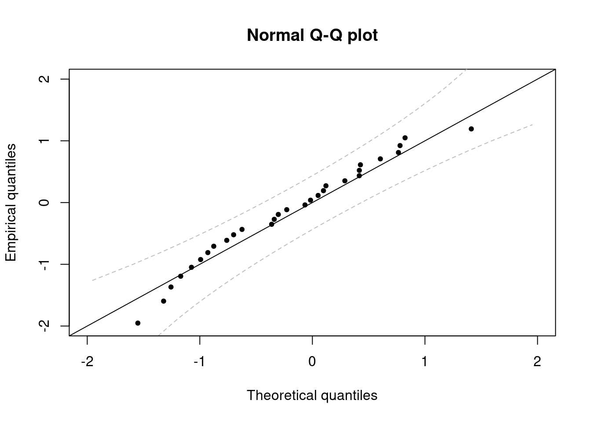
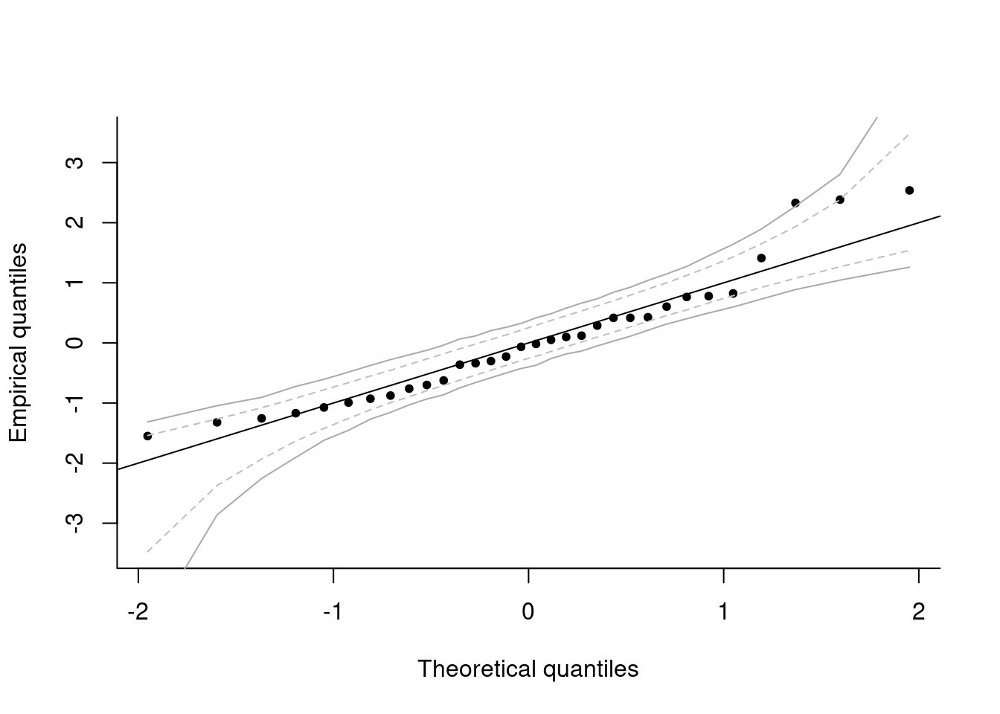

4.4 Quantile-quantile plots
The distributional assumption is mostly assessed using quantile-quantile plots. However, the latter are hardly useful unless we superimpose some confidence intervals to the graph. We will cover two methods for producing Q-Q plots for linear models: one using an orthogonal transformation that makes the estimated residuals IID. The second uses the externally studentized residuals.
4.4.1 Quantile-quantile plot of externally studentized errors
Recall that the quantile-quantile plot has
- on the \(x\)-axis, the theoretical quantiles, \(F^{-1}(\mathrm{rank}(X_i)/(n+1))\)
- on the \(y\)-axis, the empirical quantiles, \(X_i\)
For a Gaussian Q-Q plot, we will need to estimate both the mean and the variance. The usual estimators will do, replacing \(\sigma^2\) with \(s^2\) in the calculations, but all results will be approximate. One can obtain standard residuals by subtracting the mean and scaling by the standard deviation (using e.g. the function scale). The function qqnorm plots a Normal Q-Q plot without rescaling and the function qqline adds a line passing through the first and third quartile. Since these are robust estimates, this is a sensible option but implies that the scales of the Q-Q plot are not the same on the \(x\)-axis than on the \(y\)-axis. It is preferable to use these estimates to rescale the data, so as to facilitate the inclusion of approximate confidence intervals.
We now compute pointwise confidence intervals using the result on the distribution of the order statistic, which will be covered in Exercise 9.2 (in 2018).
Suppose \(\{X_i\}_{i=1}^n\) are independent random variables with absolutely continuous distribution function \(F\) and density \(f\). Let \(X_{(k)}\) denote the \(k\)th order statistic: \(X_{(1)} \leq \cdots \leq X_{(n)}\); then \(F(X_{(k)})\) follows a Beta distribution with parameters \(k\) and \(n + 1 - k\). Let \(\mathfrak{b}_{\eta}\) denote the \(\eta\)-quantile of the \(\mathsf{Beta}(k, n+1-k)\) distribution. Then, \[\Pr\left\{\mathfrak{b}_{\alpha/2} \leq F(X_{(k)}) \leq \mathfrak{b}_{1-\alpha/2}\right\} = 1-\alpha\]
so an approximate confidence interval for \(X_{(k)}\) is \([F^{-1}(\mathfrak{b}_{\alpha/2}), F^{-1}(\mathfrak{b}_{1-\alpha/2})]\).
#Student plotting position F^(-1)(E[U_{(i)}])
emp_quant <- qt(rank(esr)/(n + 1), df = n - 3)
#Function to compute the pointwise confidence intervals
#You can simply copy-paste this for your own plots
confint.qqplot.ptw <- function(n, dist = "norm", ...){
t(sapply(1:n, function(i){
#Beta order statistic quantiles, mapped to Student scale
do.call(paste0('q', dist), list(qbeta(c(0.025, 0.975), i, n - i + 1), ...))
}))
}
#Call the function
confint_lim <- confint.qqplot.ptw(n = n, dist = "t", df = n - 3)
#Plot these confidence bands alongside with the empirical quantile plotting position
matplot(sort(emp_quant), confint_lim, type = "l", lty = 2, col="grey",
main = "Normal Q-Q plot", xlim = c(-2, 2), ylim = c(-2, 2),
xlab = "Theoretical quantiles", ylab = "Empirical quantiles")
#Theoretical line of fit
abline(a = 0, b = 1)
#Add observations
points(esr, emp_quant, pch = 20)
4.4.2 Quantile-quantile plot using the QR decomposition
The problem with the residuals is that, while \(\boldsymbol{e}\) are normally distributed with variance \(\sigma^2\mathbf{M}_{\mathbf{X}}\), they are linearly dependent (think of the constraint \(\mathbf{X}^\top\boldsymbol{e}=\boldsymbol{0}_p\)).
Therefore, \(\mathbf{M}_{\mathbf{X}}\) is not invertible (it is an \(n \times n\) matrix of rank \(n - p\)) — solve(diag(n) - Hmat) typically returns an error message although some matrix decomposition such as the SVD handle the rank deficient case. One can use an orthogonal transformation to obtain a set of \(n-p\) independent residuals, but it is then difficult to relate these to the regressors.
One such orthogonal transformation is provided by the QR decomposition, \(\mathbf{X}=\mathbf{Q}\mathbf{R}\) where \(\mathbf{Q}\) is an orthogonal matrix. Consider the linear model \[\mathbf{Q}^\top\boldsymbol{Y} = \mathbf{Q}^\top\mathbf{X}\boldsymbol{\beta}+ \boldsymbol{u};\] the last \(n-p\) estimated residuals of the vector \(\tilde{\boldsymbol{e}} =\mathbf{Q}^\top\boldsymbol{e}\) will be IID Normal and the first \(p\) identically zero. In R, use the function t(qr.Q(qr(X), complete = TRUE)) to obtain the matrix \(\mathbf{Q}^\top\) associated to the design matrix X.
Note that it is difficult to detect violation of the normality assumption because observations that arise from distributions that are not heavy-tailed still behave roughly like they are normally distributed when we scale them. This phenomenon, supernormality, is a consequence of the central limit theorem.
4.4.3 Monte Carlo methods for confidence intervals
This section contains optional material. It contains advanced material that can be skipped upon first reading.
An alternative to asymptotic theory (which may be unreliable in small samples) is to rely on simulations. The idea is to obtain a statistic whose distribution is (at least asymptotically) pivotal, i.e. fully specified under the null hypothesis. One can simulate samples from the null distribution \(B\) times and compare the resulting data points with the test statistic calculated from the observed sample. This method, which is termed bootstrap test, is particularly powerful when we want to obtain critical values for test statistics, like e.g. \(\max(|t_i|)\), whose distribution is untractable.
Under the null hypothesis of the Gaussian linear model, \(\{y_i\}_{i=1}^n\) is a simple random sample from a Gaussian distribution \(\boldsymbol{Y} \sim \mathcal{N}_n(\mathbf{X}\boldsymbol{\beta}, \sigma^2 \mathbf{I}_n)\). One can resort to simulations to obtain approximate confidence intervals at asymptotic level \(\alpha\). Specifically, the postulated data generating mechanism is \[\boldsymbol{Y} = \mathbf{X}\boldsymbol{\beta} + \boldsymbol{\varepsilon}.\] We will replace the unknown parameters (here \(\boldsymbol{\beta}\) and \(\sigma^2\)) by their best linear unbiased estimate. For \(b=1, \ldots, B\) where \(B/\alpha \in \mathbb{N}\), repeat the following steps:This provides a pointwise confidence interval for each order statistic. We can assess the overall coverage of the intervals by checking whether or not one of the points falls outside the confidence envelope. Since we have \(B\) datasets, we can check each in turn (using the others as reference for the interval) and check the fraction that have at least one observations outside the simulated pointwise bands. This gives a measure of the overall error rate. We can adjust \(k\) until we get the correct overall empirical coverage.
The calculation is rather simple.
- calculate the rank of each observation (column by column) in the \(B \times n\) matrix of simulated points.
- an exceedance occurs if and only if the rank of an observation in a line is below or equal to \(k\), or at least \(B+1-k\).
- to check this, it suffices to retain the minimum and maximum rank of each row.
These methods are implemented in the package boot and returned by the function boot::envelope; you must supply a matrix of replicates test statistics. In our setting, these are the ordered samples from the externally studentized residuals \[\left\{\big\{t^{b}_{(i)}\big\}_{i=1}^n\right\}_{b=1}^B.\]
You should choose \(B\) so that \(B+1\) is divisible by \(\alpha\) and rather large. \(B = 9999\) should work well and not be too computationally costly for small datasets.
#Dimensions of the design matrix
n <- nrow(model.matrix(ols))
p <- ncol(model.matrix(ols))
#Bootstrap setting
B <- 9999
X <- model.matrix(ols)
betahat <- coef(ols)
boot_samp <- matrix(NA, nrow = B, ncol = n)
for(b in 1:B){
#Generate new errors
eps_samp <- rnorm(n, sd = sqrt(s2))
Xbeta <- X %*% betahat
#Create new replicate dataset
yb <- Xbeta + eps_samp
#Obtain externally studentized residuals
#Sort them in increasing order
boot_samp[b, ] <- sort(rstudent(lm(yb ~ -1 + X)))
}
#Add the dataset to the replicates
res_samp <- rbind((esr <- rstudent(ols)), boot_samp)
#Compute the quantiles of this experiment => per column means for each order statistic
confint_pw <- t(apply(res_samp, 2, quantile, probs = c(0.025, 0.975)))
#Alternatively, could sort each column and pick the k and B-k-1 entries
#Computed automatically by package bootstrap
env <- boot::envelope(mat = boot_samp)
#Plot the confidence interval
matplot(y = cbind(sort(esr), confint_pw), x = qt((1:n) / (n + 1), df = n - p - 1),
lty = c(1, 2, 2), col = c(1, "grey", "grey"), type = c("p","l","l"),
pch = 20, xlab = "Theoretical quantiles", ylab = "Empirical quantiles", bty = 'l')
abline(a = 0, b = 1)
#Simultaneous confidence interval
#In how many of the replicates datasets do we have
#observations outside of the pointwise confidence bands?
R <- nrow(boot_samp)
alpha <- 0.05
k <- alpha * (R + 1)/2
#Simply check this as follows:
#For each column, return the rank of the simulation
rank_boot <- apply(boot_samp, 2, rank)
#For each row, keep minimum and maximum rank
minmax_rk <- t(apply(rank_boot, 1, function(x){c(min(x), max(x))}))
#Go outside of the pointwise confidence interval if
#min(rank) < k or max(rank) > R + 1 - k
emp_boot_cov <- function(k){
1-mean((I(minmax_rk[,1] > k))*I(minmax_rk[,2] < (R+1-k)))
}
#In how many of the replicates datasets do
#we have observations outside of the bounds?
emp_boot_cov(k)## [1] 0.5877588#Ouch! decrease k until we hit alpha percentage of exceedances (0.05)
boot_cov_k <- sapply(1:k, emp_boot_cov)
klev <- match(TRUE, boot_cov_k > alpha) - 1
if(klev == 0){
klev <- 1
}
env_jt <- apply(boot_samp, 2, sort)[c(R+1-klev, klev),]
#This is what is returned by function envelope
isTRUE(all.equal(env_jt, env$overall))## [1] TRUEmatplot(x = qt((1:n)/(n+1), df = n - p -1), y = t(env$overall),
col = "darkgrey", add = TRUE, type = "l", lty = 1)
4.4.4 Parametric bootstrap confidence intervals using the QR decomposition
This section contains optional material.
There is an alternative way to obtain pointwise (and even simultaneous) confidence intervals for the QR decomposition. Under the null hypothesis: \(\boldsymbol{\varepsilon} \sim \mathcal{N}_{n}(\mathbf{0}_n, \sigma^2\mathbf{I}_n)\), we get \(\tilde{\boldsymbol{\varepsilon}} \sim \mathcal{N}_{n-p}(\mathbf{0}_n, \sigma^2\mathbf{I}_n)\) and therefore \((\tilde{\boldsymbol{\varepsilon}}- \overline{\boldsymbol{\tilde{\varepsilon}}})/\mathrm{sd}(\boldsymbol{\tilde{\varepsilon}}) \stackrel{\cdot}{\sim} \mathcal{N}_{n-p}(\mathbf{0}_n, \mathbf{I}_n)\) is asymptotically pivotal. A pivotal quantity has a fully specified distribution.
We have only observed one sample, so comparisons are difficult because the measurements are limited. Under the null hypothesis, it is however easy to generate new datasets: simply generate new observations \(\tilde{\boldsymbol{\epsilon}}_b \sim \mathcal{N}_{n-p}(\mathbf{0}_n, \mathbf{I}_n)\) and standardize them, mimicking what we have done to obtain our sample quantiles. This gives us a potentially unlimited number of samples to compare our observations to. By ordering each new set of errors of the \(B\) replicates, we get a matrix of observations whose rows are order statistics from a run and whose columns corresponds to the empirical distribution of each order statistic. A symmetric 95% confidence interval is obtained by taking the empirical (0.025, 0.975) percentiles of each order statistic.